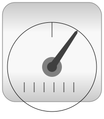

This package contains components to model 1-dimensional translational mechanical systems.
The filled and non-filled green squares at the left and right side of a component represent mechanical flanges. Drawing a line between such squares means that the corresponding flanges are rigidly attached to each other. The components of this library can be usually connected together in an arbitrary way. E.g. it is possible to connect two springs or two sliding masses with inertia directly together.
The only connection restriction is that the Coulomb friction elements (e.g., MassWithStopAndFriction) should be only connected together provided a compliant element, such as a spring, is in between. The reason is that otherwise the frictional force is not uniquely defined if the elements are stuck at the same time instant (i.e., there does not exist a unique solution) and some simulation systems may not be able to handle this situation, since this leads to a singularity during simulation. It can only be resolved in a "clean way" by combining the two connected friction elements into one component and resolving the ambiguity of the frictional force in the stuck mode.
Another restriction arises if the hard stops in model MassWithStopAndFriction are used, i. e. the movement of the mass is limited by a stop at smax or smin. This requires the states Stop.s and Stop.v . If these states are eliminated during the index reduction the model will not work. To avoid this any inertias should be connected via springs to the Stop element, other sliding masses, dampers or hydraulic chambers must be avoided.
In the icon of every component an arrow is displayed in grey color. This arrow characterizes the coordinate system in which the vectors of the component are resolved. It is directed into the positive translational direction (in the mathematical sense). In the flanges of a component, a coordinate system is rigidly attached to the flange. It is called flange frame and is directed in parallel to the component coordinate system. As a result, e.g., the positive cut-force of a "left" flange (flange_a) is directed into the flange, whereas the positive cut-force of a "right" flange (flange_b) is directed out of the flange. A flange is described by a Modelica connector containing the following variables:
Modelica.SIunits.Position s "Absolute position of flange"; flow Modelica.SIunits.Force f "Cut-force in the flange";
This library is designed in a fully object oriented way in order that components can be connected together in every meaningful combination (e.g., direct connection of two springs or two shafts with inertia). As a consequence, most models lead to a system of differential-algebraic equations of index 3 (= constraint equations have to be differentiated twice in order to arrive at a state space representation) and the Modelica translator or the simulator has to cope with this system representation. According to our present knowledge, this requires that the Modelica translator is able to symbolically differentiate equations (otherwise it is e.g., not possible to provide consistent initial conditions; even if consistent initial conditions are present, most numerical DAE integrators can cope at most with index 2 DAEs).
In version 3.2 of the Modelica Standard Library, all dissipative components of the Translational library got an optional heatPort connector to which the dissipated energy is transported in form of heat. This connector is enabled via parameter "useHeatPort". If the heatPort connector is enabled, it must be connected, and if it is not enabled, it must not be connected. Independently, whether the heatPort is enabled or not, the dissipated power is available from the new variable "lossPower" (which is positive if heat is flowing out of the heatPort). For an example, see Examples.HeatLosses.
Contributors to this library:
Copyright © 1998-2015, Modelica Association, Anton Haumer and Universität Paderborn, FB 12.
This Modelica package is free software and the use is completely at your own risk; it can be redistributed and/or modified under the terms of the Modelica License 2. For license conditions (including the disclaimer of warranty) see Modelica.UsersGuide.ModelicaLicense2 or visit https://www.modelica.org/licenses/ModelicaLicense2.
| Name | Description |
|---|---|
| Demonstration examples of the components of this package | |
| Components for 1D translational mechanical drive trains | |
|  Sensors | Sensors for 1-dim. translational mechanical quantities |
| Sources to drive 1D translational mechanical components | |
| Interfaces for 1-dim. translational mechanical components |